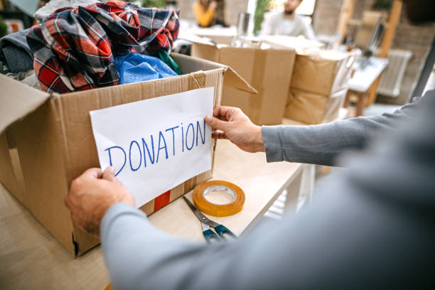
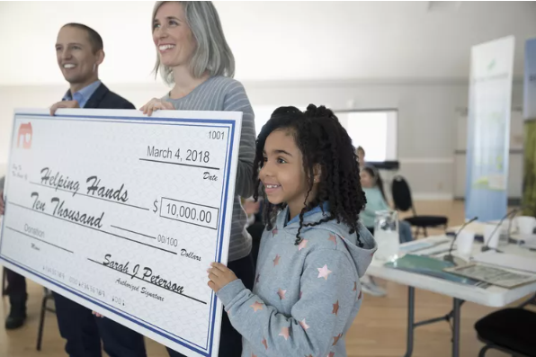
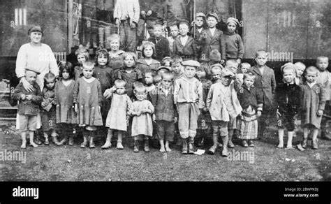
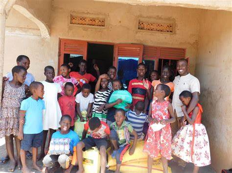

Six Degree Charity
we are all connected by six degree and helping make life better.
What is Six Degree Charity About?
A charitable nonprofit organization aimed at bringing smiles to faces worldwide. We focus on rebuilding and providing essential services for a better life.
Our movement in a rural area.
A mood that got our organization feeling happy. for so long no water here

To Donate CLICK HERE
We offer schoolarship to families and chah gift to start small business
What Is a Charitable Donation?
A charitable donation is a gift of cash or property made to a nonprofit organization to help it accomplish its goals. In the U.S., these donations may be tax-deductible.

What is Our Organization About?
We are all about giving — we mean it. to help one another rise and enpower ourself is part of earth goal, so by giving to the world creatures we create a new standard.
- We gather generous people and go to areas in need. 
- We operate like a trust or foundation focused on charitable, religious, scientific, or educational purposes.
- We support civil defense volunteers and organizations through donations and services.
- We collaborate with different companies (e.g., Polanco, King Charmer, W.H.O, Nestlie, LG tech, Polystar, Bugati, And many other Technolgy,Health care and food industries) to maximize impact.
Where We Go and What We Do
The places incluide midwives Hospital and we make beds for the babies and food they will need.

- We go to Hospital and carry out charity, by paying bills for sick patient who needs treatment
- Where they are children in need,
for the creatures of the earth are to be cared for, so we spreed out to the fatherless and motherless children out there,
Up to 3000 Orphanages around the world, sending things like food,cloths,medicine and building matirals.
 - Public Schools — providing scholarships and supplies
- Ghetto and poor areas — building new infrastructures
- Food distribution to the less privileged
- Building housing shelters for homeless children
Hospitals

Orphanage
And we make water system to be possible for people to get clean drinking wate
Together with a team of generous people, we build hope...
Contact us
Call Phone Number: +234 (708) 631 2481
Email Address: jerrysamuel85@outlook.com